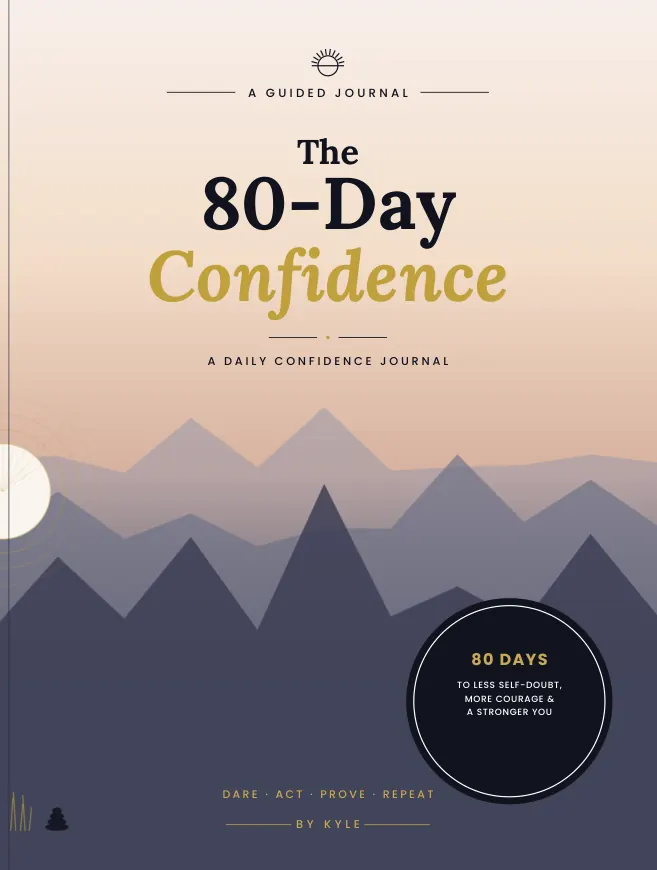
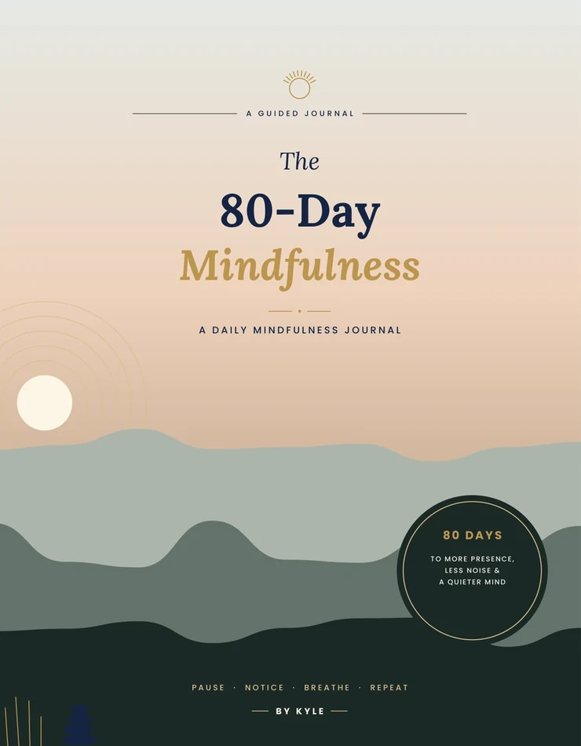

Browse by category
Planners & Journals
Space for reflection, routines and the things worth recording.

Planners & Journals
The 80-Day Sleep
A daily journal for reflecting on bedtime and sleep habits.
See inside
Planners & Journals
The 80-Day Calm
A guided daily journal with prompts for calmer moments.
See inside
Planners & Journals
The 80-Day Self-Care
A daily journal for making space to reflect on self-care.
See inside
Planners & Journals
The 80-Day Gratitude
A guided journal for daily gratitude and reflection.
See inside
Planners & Journals
The 80-Day Confidence
A guided daily confidence journal with reflective prompts.
See inside
Planners & Journals
The 80-Day Mindfulness
A daily mindfulness journal with guided prompts and short practices.
See inside